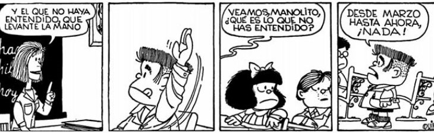

Función de la Evaluación Diagnóstica en el contexto de la asignatura de Formación Tecnológica
Evaluación de los aprendizajes
Con el propósito de apoyar el trabajo de las personas docentes de la asignatura de Formación Tecnológica, desde la Unidad de Actualización Docente (UAD) del Programa Nacional de Formación Tecnológica, se facilita este recurso, para contribuir con el reconocimiento de la función diagnóstica de la evaluación de los aprendizajes, de acuerdo con lo que establece el Ministerio de Educación Pública (MEP) a través de sus respectivas unidades competentes en evaluación, abordando normativas, técnicas e instrumentos de evaluación para los aprendizajes, que se requieren durante la implementación de la asignatura de Formación Tecnológica.
La evaluación de los aprendizajes cumple tres funciones: diagnóstica, formativa y sumativa. Este recurso contará con información importante para implementar la función diagnóstica. Las funciones formativa y sumativa se abordarán a través de otras oportunidades de actualización docente.
¿Qué es la evaluación de los aprendizajes?
Observe la siguiente tira cómica de Mafalda

QUINO. (1999) Todo Mafalda. Barcelona. Lumen
Participe en la nube de palabras y reflexione sobre el concepto de evaluación. Para ingresar utilice el siguiente vínculo Nube de palabraso bien escaneando el código QR a continuación:
Recuerde, luego de participar actualice la página en el navegador, para ver los resultados en la nube de palabras.
Sopa de letras
2
Identifique las palabras en la sopa de letras que están relacionadas con las funciones de la evaluación de los aprendizajes:
Su navegador no es compatible con esta herramienta.
Definición de Evaluación de los Aprendizajes
Como se indica en el Reglamento de Evaluación de los Aprendizajes (REA) en el artículo 3°:
"La evaluación de los aprendizajes, es un proceso continuo de recopilación de información cualitativa y cuantitativa, que fundamenta la emisión de juicios de valor y la toma de decisiones por parte de la persona docente y el estudiantado, para la mejora progresiva de los procesos de enseñanza y aprendizaje."
Reflexione...
A continuación se presenta una lista de afirmaciones incompletas, apoyado en la definición anterior complete cada una con las palabras que faltan.
Importancia de la evaluación para mejorar el proceso de enseñanza y aprendizaje
2
La evaluación concebida como proceso tiene una amplia importancia con particularidades según el rol de cada protagonista.
Pulse sobre los íconos activos de la imagen para repasar la importancia de la evaluación de acuerdo con el rol de los protagonistas del proceso de enseñanza y aprendizaje:
{"typeGame":"Mapa","instructions":"","showMinimize":false,"showActiveAreas":false,"author":"","url":"resources/Docente.png","authorImage":"Imagen de Canva para Educación. (2024)","altImage":"","itinerary":{"showClue":false,"clueGame":"","percentageClue":40,"showCodeAccess":false,"codeAccess":"","messageCodeAccess":""},"points":[{"id":"p613058207916","title":"Importancia de la evaluación","type":2,"url":"","video":"","x":0.24645161290322581,"y":0.36155946601941746,"x1":0,"y1":0,"footer":"","author":"","alt":"","iVideo":0,"fVideo":0,"eText":"","iconType":4,"question":"","question_audio":"","toolTip":"","link":"","map":{"id":"a613058207916","pts":[{"id":"p1521965008170","title":"","type":0,"url":"","video":"","x":0,"y":0,"x1":0,"y1":0,"footer":"","author":"","alt":"","iVideo":0,"fVideo":0,"eText":"","iconType":0,"question":"","question_audio":"","toolTip":"","link":"","map":{"id":"a1521965008170","url":"","alt":"","author":"","pts":[]},"slides":[{"id":"s1521965008170","title":"","url":"","author":"","alt":"","footer":""}],"activeSlide":0}],"url":"","alt":"","author":"","active":0},"slides":[{"id":"s613058207916","title":"","url":"","author":"","alt":"","footer":""}],"activeSlide":0,"audio":"resources/AudioFichaEstudiante.mp3"},{"id":"p378391264599","title":"Importancia de la evaluación","type":2,"url":"","video":"","x":0.44516129032258067,"y":0.12597087378640776,"x1":0,"y1":0,"footer":"","author":"","alt":"","iVideo":0,"fVideo":0,"eText":"","iconType":4,"question":"","question_audio":"","toolTip":"","link":"","map":{"id":"a378391264599","pts":[{"id":"p1106433904277","title":"","type":0,"url":"","video":"","x":0,"y":0,"x1":0,"y1":0,"footer":"","author":"","alt":"","iVideo":0,"fVideo":0,"eText":"","iconType":0,"question":"","question_audio":"","toolTip":"","link":"","map":{"id":"a1106433904277","url":"","alt":"","author":"","pts":[]},"slides":[{"id":"s1106433904277","title":"","url":"","author":"","alt":"","footer":""}],"activeSlide":0}],"url":"","alt":"","author":"","active":0},"slides":[{"id":"s378391264599","title":"","url":"","author":"","alt":"","footer":""}],"activeSlide":0,"audio":"resources/AudioFichaDocente.mp3"}],"isScorm":0,"textButtonScorm":"Guardar la puntuación","repeatActivity":false,"textAfter":"","evaluation":0,"selectsGame":[{"typeSelect":0,"numberOptions":4,"quextion":"","options":["","","",""],"solution":"","solutionWord":"","percentageShow":35,"msgError":"","msgHit":""}],"isNavigable":true,"showSolution":true,"timeShowSolution":3,"version":2,"percentajeIdentify":100,"percentajeShowQ":100,"percentajeQuestions":100,"autoShow":true,"optionsNumber":0,"msgs":{"msgSubmit":"Enviar","msgIndicateWord":"Proporcione una palabra o expresión","msgClue":"¡Genial! La pista es:","msgErrors":"Errores","msgHits":"Aciertos","msgScore":"Puntuación","msgMinimize":"Minimizar","msgMaximize":"Maximizar","msgFullScreen":"Pantalla Completa","msgNoImage":"Pregunta sin imágenes","msgSuccesses":"¡Correcto! | ¡Excelente! | ¡Genial! | ¡Muy bien! | ¡Perfecto!","msgFailures":"¡No era eso! | ¡Incorrecto! | ¡No es correcto! | ¡Lo sentimos! | ¡Error!","msgTryAgain":"Necesita al menos un %s% de respuestas correctas para conseguir la información. Vuelva a intentarlo.","msgEndGameScore":"Antes de guardar la puntuación comience la partida.","msgScoreScorm":"La puntuación no se puede guardar porque esta página no forma parte de un paquete SCORM.","msgPoint":"Punto","msgAnswer":"Responder","msgOnlySaveScore":"¡Sólo puede guardar la puntuación una vez!","msgOnlySave":"Sólo puede guardar una vez","msgInformation":"Información","msgYouScore":"Su puntuación","msgOnlySaveAuto":"Su puntuación se guardará después de cada pregunta. Sólo puede jugar una vez.","msgSaveAuto":"Su puntuación se guardará automáticamente después de cada pregunta.","msgSeveralScore":"Puede guardar la puntuación tantas veces como quiera","msgYouLastScore":"La última puntuación guardada es","msgActityComply":"Ya ha realizado esta actividad.","msgPlaySeveralTimes":"Puede realizar esta actividad cuantas veces quiera","msgClose":"Cerrar","msgPoints":"puntos","msgQuestions":"Preguntas","msgAudio":"Audio","msgAccept":"Aceptar","msgYes":"Sí","msgNo":"No","msgShowAreas":"Mostrar áreas activas","msgShowTest":"Mostrar cuestionario","msgGoActivity":"Pulsa aquí para realizar esta actividad","msgSelectAnswers":"Selecciona las opciones correctas y pulsa sobre el botón 'Responder'.","msgCheksOptions":"Marca todas las opciones en el orden adecuado y pulsa sobre el botón 'Responder'.","msgWriteAnswer":"Escribe la palabra o expresión correcta y pulsa en el botón 'Responder'.","msgIdentify":"Identifica","msgSearch":"Buscar","msgClickOn":"Pulsa sobre","msgReviewContents":"Debes repasar el %s% de los contenidos de la actividad antes de completar el cuestionario.","msgScore10":"¡Todo perfecto! ¡Enhorabuena! ¿Deseas repetir esta actividad?","msgScore4":"No has superado esta prueba. Repasa sus contenidos e inténtalo de nuevo. ¿Deseas repetir la actividad?","msgScore6":"¡Estupendo! Has superado la prueba, pero seguro que lo puedes mejorar. ¿Deseas repetir esta actividad?","msgScore8":"¡Casi perfecto! Aún lo puedes hacer mejor. ¿Deseas repetir esta actividad?","msgNotCorrect":"¡No es correcto! Has pulsado sobre","msgNotCorrect1":"¡No es correcto! Has pulsado sobre","msgNotCorrect2":"y la respuesta correcta es","msgNotCorrect3":"¡Prueba otra vez!","msgAllVisited":"¡Genial! Has visitado los puntos necesarios.","msgCompleteTest":"Puedes completar el cuestionario.","msgPlayStart":"Pulse aquí para empezar","msgSubtitles":"Subtítulos","msgSelectSubtitles":"Selecciona un archivo de subtítulos. Formatos válidos:","msgNumQuestions":"Número de preguntas","msgHome":"Inicio","msgReturn":"Volver"}}
A la persona estudiante:
Otorga autogestión al proceso.
Autorregula el aprendizaje, según sus características e intereses.
Promueve autorreflexión y realimentación en torno a la construcción del conocimiento.
Consciente del avance y lo que es capaz de hacer.
A la persona docente:
Propone diversidad de estrategias, técnicas y actividades, para procurar que el estudiantado evidencie de forma progresiva sus desempeños y logros, sobre el conocimiento que va adquiriendo (saber) y lo que puede hacer con lo que sabe (desempeño), según lo propuesto en el planeamiento didáctico en congruencia con el programa de estudios.
Orienta el proceso evaluativo a la comprensión y aprovechamiento de los aprendizajes según las capacidades, intereses y características del estudiantado.
Obtiene insumos para tomar decisiones sobre acciones, por ejemplo, reorientar la planificación, la forma de realimentar y acompañar al estudiantado.
Mejora el proceso, promoviendo que se aprenda más y mejor.
Su navegador no es compatible con esta herramienta.
Función diagnóstica de la evaluación de los aprendizajes
2
A continuación se analiza la función diagnóstica de la evaluación de los aprendizajes, le invitamos a explorar la información siguiente y realizar las actividades.
Explore en los íconos de la imagen algunas consideraciones importantes, para tener presente sobre la FunciónDiagnóstica de la evaluación de los aprendizajes.
{"typeGame":"Mapa","instructions":"","showMinimize":false,"showActiveAreas":false,"author":"","url":"resources/Diagnostica.png","authorImage":"Imagen de Canva para Educación. (2024)","altImage":"","itinerary":{"showClue":false,"clueGame":"","percentageClue":40,"showCodeAccess":false,"codeAccess":"","messageCodeAccess":""},"points":[{"id":"p1342957206173","title":"Evaluación Diagnóstica","type":2,"url":"","video":"","x":0.8510344827586207,"y":0.4547633495145631,"x1":0,"y1":0,"footer":"","author":"","alt":"","iVideo":0,"fVideo":0,"eText":"","iconType":4,"question":"","question_audio":"","toolTip":"","link":"","map":{"id":"a1342957206173","pts":[{"id":"p1326157644477","title":"","type":0,"url":"","video":"","x":0,"y":0,"x1":0,"y1":0,"footer":"","author":"","alt":"","iVideo":0,"fVideo":0,"eText":"","iconType":0,"question":"","question_audio":"","toolTip":"","link":"","map":{"id":"a1326157644477","url":"","alt":"","author":"","pts":[]},"slides":[{"id":"s1326157644477","title":"","url":"","author":"","alt":"","footer":""}],"activeSlide":0}],"url":"","alt":"","author":"","active":0},"slides":[{"id":"s1342957206173","title":"","url":"","author":"","alt":"","footer":""}],"activeSlide":0,"audio":"resources/Funcion.m4a"},{"id":"p1678854548412","title":"Evaluación Dignóstica","type":2,"url":"","video":"","x":0.4979310344827586,"y":0.49165655339805825,"x1":0,"y1":0,"footer":"","author":"","alt":"","iVideo":0,"fVideo":0,"eText":"","iconType":4,"question":"","question_audio":"","toolTip":"","link":"","map":{"id":"a1678854548412","pts":[{"id":"p291566957608","title":"","type":0,"url":"","video":"","x":0,"y":0,"x1":0,"y1":0,"footer":"","author":"","alt":"","iVideo":0,"fVideo":0,"eText":"","iconType":0,"question":"","question_audio":"","toolTip":"","link":"","map":{"id":"a291566957608","url":"","alt":"","author":"","pts":[]},"slides":[{"id":"s291566957608","title":"","url":"","author":"","alt":"","footer":""}],"activeSlide":0}],"url":"","alt":"","author":"","active":0},"slides":[{"id":"s1678854548412","title":"","url":"","author":"","alt":"","footer":""}],"activeSlide":0,"audio":"resources/Quees.m4a"},{"id":"p1449975805497","title":"Evaluación Diagnóstica","type":2,"url":"","video":"","x":0.24689655172413794,"y":0.6275788834951457,"x1":0,"y1":0,"footer":"","author":"","alt":"","iVideo":0,"fVideo":0,"eText":"","iconType":4,"question":"","question_audio":"","toolTip":"","link":"","map":{"id":"a1449975805497","pts":[{"id":"p315923620775","title":"","type":0,"url":"","video":"","x":0,"y":0,"x1":0,"y1":0,"footer":"","author":"","alt":"","iVideo":0,"fVideo":0,"eText":"","iconType":0,"question":"","question_audio":"","toolTip":"","link":"","map":{"id":"a315923620775","url":"","alt":"","author":"","pts":[]},"slides":[{"id":"s315923620775","title":"","url":"","author":"","alt":"","footer":""}],"activeSlide":0}],"url":"","alt":"","author":"","active":0},"slides":[{"id":"s1449975805497","title":"","url":"","author":"","alt":"","footer":""}],"activeSlide":0,"audio":"resources/Finalidades.m4a"}],"isScorm":0,"textButtonScorm":"Guardar la puntuación","repeatActivity":false,"textAfter":"","evaluation":0,"selectsGame":[{"typeSelect":0,"numberOptions":4,"quextion":"","options":["","","",""],"solution":"","solutionWord":"","percentageShow":35,"msgError":"","msgHit":""}],"isNavigable":true,"showSolution":true,"timeShowSolution":3,"version":2,"percentajeIdentify":100,"percentajeShowQ":100,"percentajeQuestions":100,"autoShow":true,"optionsNumber":0,"msgs":{"msgSubmit":"Enviar","msgIndicateWord":"Proporcione una palabra o expresión","msgClue":"¡Genial! La pista es:","msgErrors":"Errores","msgHits":"Aciertos","msgScore":"Puntuación","msgMinimize":"Minimizar","msgMaximize":"Maximizar","msgFullScreen":"Pantalla Completa","msgNoImage":"Pregunta sin imágenes","msgSuccesses":"¡Correcto! | ¡Excelente! | ¡Genial! | ¡Muy bien! | ¡Perfecto!","msgFailures":"¡No era eso! | ¡Incorrecto! | ¡No es correcto! | ¡Lo sentimos! | ¡Error!","msgTryAgain":"Necesita al menos un %s% de respuestas correctas para conseguir la información. Vuelva a intentarlo.","msgEndGameScore":"Antes de guardar la puntuación comience la partida.","msgScoreScorm":"La puntuación no se puede guardar porque esta página no forma parte de un paquete SCORM.","msgPoint":"Punto","msgAnswer":"Responder","msgOnlySaveScore":"¡Sólo puede guardar la puntuación una vez!","msgOnlySave":"Sólo puede guardar una vez","msgInformation":"Información","msgYouScore":"Su puntuación","msgOnlySaveAuto":"Su puntuación se guardará después de cada pregunta. Sólo puede jugar una vez.","msgSaveAuto":"Su puntuación se guardará automáticamente después de cada pregunta.","msgSeveralScore":"Puede guardar la puntuación tantas veces como quiera","msgYouLastScore":"La última puntuación guardada es","msgActityComply":"Ya ha realizado esta actividad.","msgPlaySeveralTimes":"Puede realizar esta actividad cuantas veces quiera","msgClose":"Cerrar","msgPoints":"puntos","msgQuestions":"Preguntas","msgAudio":"Audio","msgAccept":"Aceptar","msgYes":"Sí","msgNo":"No","msgShowAreas":"Mostrar áreas activas","msgShowTest":"Mostrar cuestionario","msgGoActivity":"Pulsa aquí para realizar esta actividad","msgSelectAnswers":"Selecciona las opciones correctas y pulsa sobre el botón 'Responder'.","msgCheksOptions":"Marca todas las opciones en el orden adecuado y pulsa sobre el botón 'Responder'.","msgWriteAnswer":"Escribe la palabra o expresión correcta y pulsa en el botón 'Responder'.","msgIdentify":"Identifica","msgSearch":"Buscar","msgClickOn":"Pulsa sobre","msgReviewContents":"Debes repasar el %s% de los contenidos de la actividad antes de completar el cuestionario.","msgScore10":"¡Todo perfecto! ¡Enhorabuena! ¿Deseas repetir esta actividad?","msgScore4":"No has superado esta prueba. Repasa sus contenidos e inténtalo de nuevo. ¿Deseas repetir la actividad?","msgScore6":"¡Estupendo! Has superado la prueba, pero seguro que lo puedes mejorar. ¿Deseas repetir esta actividad?","msgScore8":"¡Casi perfecto! Aún lo puedes hacer mejor. ¿Deseas repetir esta actividad?","msgNotCorrect":"¡No es correcto! Has pulsado sobre","msgNotCorrect1":"¡No es correcto! Has pulsado sobre","msgNotCorrect2":"y la respuesta correcta es","msgNotCorrect3":"¡Prueba otra vez!","msgAllVisited":"¡Genial! Has visitado los puntos necesarios.","msgCompleteTest":"Puedes completar el cuestionario.","msgPlayStart":"Pulse aquí para empezar","msgSubtitles":"Subtítulos","msgSelectSubtitles":"Selecciona un archivo de subtítulos. Formatos válidos:","msgNumQuestions":"Número de preguntas","msgHome":"Inicio","msgReturn":"Volver"}}
Función:
El artículo 4° “Funciones de la evaluación de los aprendizajes” del Reglamento de Evaluación de los Aprendizajes, en el inciso a señala que la evaluación diagnóstica:
"Permite conocer el estado inicial de la persona estudiante en las áreas del desarrollo: cognoscitiva, socio afectiva y psicomotriz, con el fin de facilitar, con base en la información que de ella se deriva, la aplicación de las estrategias correspondientes."
¿Qué es?
En el documento "Evaluación Diagnóstica: conocer para mejorar" del año 2023, se amplía esta definición agregando:
"La evaluación diagnóstica es un proceso valorativo, en el que la persona docente aplica técnicas e instrumentos con el propósito de recopilar información respecto de: conocimientos, estilos de aprendizaje, habilidades, intereses y actitudes, entre otras de las personas estudiantes."
"Constituye una primera aproximación a la situación real del estudiante, que permite conocer los aspectos que requieren cambios para mejorarse y los que deben estimularse y motivarse, mediante las estrategias pertinentes consideradas en el planeamiento didáctico."
Finalidades:
En el documento “Evaluación Diagnóstica: conocer para mejorar" del año 2023 establece dos finalidades de la evaluación diagnóstica que le permite a la persona docente:
"Entender el estado o situación real de la persona estudiante al inicio del curso lectivo o en diferentes momentos del proceso de construcción del conocimiento."
"Tomar decisiones que faciliten y mejoren el proceso de construcción del conocimiento durante la formación integral de la persona estudiante."
Su navegador no es compatible con esta herramienta.
Actividad de repaso
Lea y complete de acuerdo con lo explorado en la información anterior.
Actividad de repaso
Lea y complete de acuerdo con lo explorado en la información anterior.
Actividad de repaso
Lea y complete de acuerdo con lo explorado en la información anterior.
Descripción de la evaluación diagnóstica
Observe el siguiente video interactivo, que hace una descripción de la Función Diagnóstica de la evaluación de los aprendizajes:
Al terminar la ejecución del diagnóstico, la persona docente cuenta con insumos producto de las técnicas o instrumentos que haya aplicado en el proceso, por ejemplo:
Los instrumentos resueltos por el estudiantado.
Registros de observaciones.
Registros anecdóticos.
Es momento que la persona docente realice las siguientes acciones:
1. Sistematización de desempeños y logros
Consiste en el registro de las respuestas brindadas por las personas estudiantes a cada uno de los planteamientos formulados en el instrumento. Para esto se propone recopilar en un documento la información obtenida por grupo o sección (MEP,2023a, p.15).
2. Análisis de la información
Con la información sistematizada, la persona docente realiza el análisis de desempeños y logros demostrados por las personas estudiante. Este análisis le permite estimar o conocer el estado inicial de cada persona estudiante y del grupo en general (MEP,2023a, p.16).
3. Toma de decisiones
De acuerdo con el documento "Evaluación Diagnóstica: conocer para mejorar" del MEP, este momento permite a la persona docente tomar decisiones relacionadas con:
Ajustes en las estrategias de mediación pedagógica.
Planificar acciones orientadas a la recuperación o nivelación de conocimientos.
Establecer el tiempo de recuperación o nivelación de acuerdo con el contexto.
4. Socialización de los desempeños y logros
Es el cierre del proceso diagnóstico y permite a la persona docente comunicar los desempeños y logros demostrados por las personas estudiantes para la formulación y ejecución de acciones de manera conjunta entre el personal docente, el estudiantado y las personas encargadas legales (MEP,2023a,p.17), en función a:
Establecer acuerdos para mejorar el aprendizaje.
Orientar el desarrollo de la autorregulación de la persona estudiante.
Identificar los apoyos educativos requeridos, las habilidades y las destrezas en diferentes áreas.
Tomar decisiones orientadas al acompañamiento y seguimiento.
Reflexione sobre lo leído
Seleccione las respuestas correctas y pulse sobre el botón "comprobar"
Su navegador no es compatible con esta herramienta.
Ejemplos de actividades diagnósticas para el Área de Apropiación Tecnológica y Digital
Explore la siguiente presentación para conocer algunos ejemplos de actividades diagnósticas. Puede utilizar la barra de herramientas lateral izquierda del recurso embebido, ampliar o navegar en la presentación:
Para saber más...
Para profundizar en la Función Diagnóstica de la Evaluación de los Aprendizaje, observe el video iniciando en el minuto 14:51 y hasta el minuto 24:47:
Criterios para la asignación del porcentaje correspondiente a la asistencia, Art. 31°.
Para valorar detalladamente todo lo normado en relación con la asignación del porcentaje de asistencia es necesario que consulte el REA en su artículo 31°.